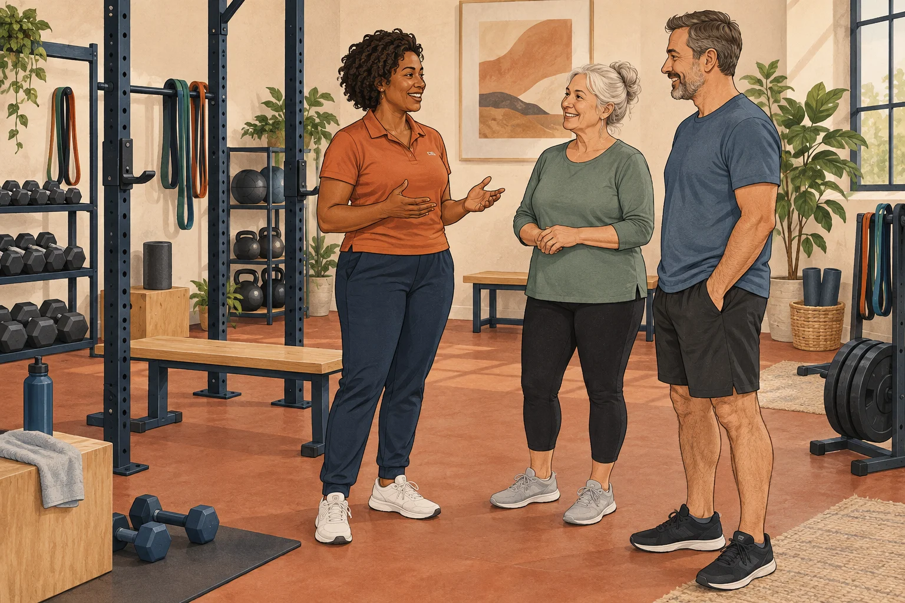

A small vocabulary
- Load
- What you work against: body weight, a band, a machine or a free weight.
- Rep
- One complete repetition of a movement.
- Set
- A group of repetitions followed by a rest.
K & A Performance / Health & wellness
Welcome to the studio
Beginner strength · About 10 minutes
Learn the movements. Find a manageable challenge. Make room for a habit you can keep.

Your starting point
Standing from a chair, carrying groceries and opening a door all ask your muscles to work.
General education, not a personal exercise prescription. Adapt activity to your abilities and health. A coach can help with technique; a clinician can advise on symptoms, injuries or conditions that affect exercise.
Nothing is timed. Tab reaches controls; Enter or Space activates them. Optional audio and a transcript sit below the lesson.
Strength for everyday life
Explore what strength contributes, and where the wider activity picture matters.
Sources: CDC: activity benefits and NIA: types of exercise.
The movement library
These patterns organize practice. They are a teaching framework, not a complete exercise prescription.
The movement sorting bench
Pick up the task card, then place it on a movement station. You can drag it, or use the buttons.
Find a manageable challenge
Explore the dial as a learning tool. It cannot measure your readiness or prescribe a load.
After a movement feels controlled and recovery is manageable, a small change may be appropriate. More is not automatically better.
Effort and “reps left” are estimates. A number on this dial does not map exactly to repetitions remaining.
The coaching lens
Move the lens from the observation to the coaching response. These schematic cues are starting points, not a diagnosis.
Your planning studio
Sketch practice days and collect movements to discuss with a coach. This is a starting conversation, not a complete personal program.
Adult guidelines include strength work for all major muscle groups on at least two days a week, alongside aerobic activity. Start with what you can manage and build gradually.
Your note stays in this tab unless you download it.
Options need a suitable setup and may need adapting. A personal plan should consider all major muscle groups, including the abdomen, and your individual needs.
Take the practice with you
Save your draft week and bring your questions to someone who can watch you move.
General education. CDC adult guidelines.